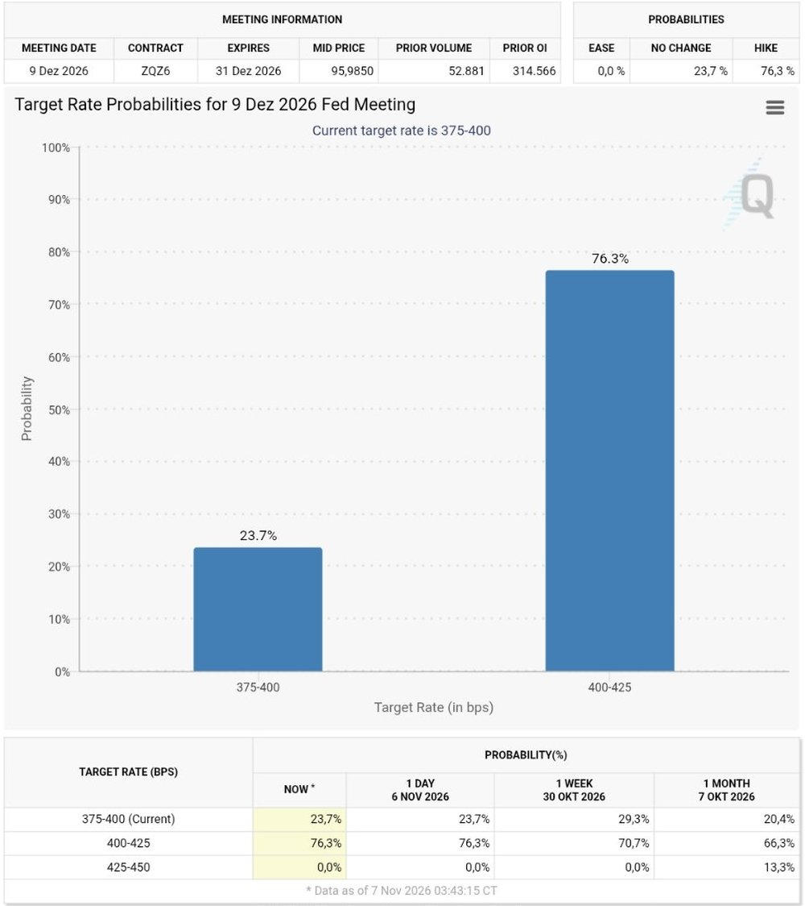

Analyse
Wochenausblick: Die Zinserhöhung rückt näher, dazu Inflationszahlen und Zahlen von Siemens, Allianz und Cisco
Was in der Woche vom 9. bis 13. November zählt: die US-Inflation am Dienstag, viele Notenbanker, Anleiheauktionen und Quartalszahlen von Siemens, Allianz, Munich Re, RWE, Cisco und Applied Materials.
Kurz gesagt
Zinserhöhung im Dezember: wahrscheinlicher geworden (76 %, vor einer Woche 71 %) Wichtigster Termin: US-Inflation für Oktober, Dienstag um 14:30 Uhr
- Zinsen: Nach dem starken Arbeitsmarktbericht rechnet der Markt fest mit einer Zinserhöhung der US-Notenbank am 9. Dezember. Zwölf Notenbanker treten in dieser Woche auf, dazu kommen drei große Anleiheauktionen.
- Zahlen: In den USA melden nur 13 Unternehmen aus dem S&P 500, im Mittelpunkt stehen Cisco und Applied Materials am Donnerstag. In Deutschland geht es dagegen Schlag auf Schlag mit Siemens, Allianz, Munich Re, RWE, E.ON, Henkel und Infineon.
- Die Frage hinter allem: Hält die Erholung der Chipwerte, oder geht die Korrektur weiter? Die Strategen sind uneins.
Der Start: Aktien nach der schwächsten Woche seit Juni
Die Börsen gehen angeschlagen in die neue Woche. Der S&P 500 schloss am Freitag knapp über seiner 200-Tage-Linie, der Nasdaq liegt rund 2 % darunter. Der Schwankungsindex VIX steht bei 25,6, die Rendite zehnjähriger US-Staatsanleihen bei 4,87 % und WTI-Öl bei rund 91 Dollar. Wie es zu dieser Lage kam, steht in unserer Wochenbilanz.
Die Woche dreht sich um zwei Fragen: Was sagt die Inflation zur Zinspolitik, und halten die Unternehmen mit ihren Zahlen die Erholung am Leben?
Montag, 9. November: ruhiger Start
Am Vormittag erscheint der Sentix-Konjunkturindex für den Euroraum, außerdem versteigert das US-Finanzministerium 58 Mrd. Dollar dreijährige Anleihen. Die EU-Finanzminister treffen sich.
| Unternehmen | Zahlen |
|---|---|
| Quartalszahlen | |
| Quartalszahlen | |
| Quartalszahlen | |
| KKR | Quartalszahlen |
Außerdem berichten Gea, Constellation Energy und Take-Two.
Dienstag, 10. November: Inflation und CoreWeave
Der wichtigste Termin der Woche kommt um 14:30 Uhr: Die US-Verbraucherpreise für Oktober. Dabei gibt es eine Besonderheit. Nach dem Regierungsstillstand im Vorjahr fehlen Preiserhebungen vom Oktober 2025, deshalb veröffentlicht die Statistikbehörde für die meisten Indizes keine Jahresveränderung. Anleger müssen sich stärker auf die Monatswerte stützen. Dazu kommt die Auktion zehnjähriger Anleihen über 42 Mrd. Dollar. Schwache Nachfrage könnte die Renditen treiben.
| Unternehmen | Zahlen |
|---|---|
| Jahreszahlen | |
| Henkel | Quartalszahlen |
| Quartalszahlen | |
| Nach Börsenschluss, erwartet wird ein Verlust von 1,45 $ je Aktie (Vorjahr: 0,31 $) |
Außerdem berichten K+S, Uniper und die Porsche SE. CoreWeave baut seine Rechenzentren mit viel Fremdkapital, der Markt liest die Zahlen deshalb als Test dafür, wie sich der KI-Boom finanziert.
Mittwoch, 11. November: Versorger im Fokus
In den USA ist Veterans Day: Der Anleihehandel ruht, die Aktienbörsen sind geöffnet. Die Versorger stehen im Mittelpunkt der Debatte um den Strombedarf von Rechenzentren, entsprechend aufmerksam wird auf ihre Investitionspläne geschaut.
| Unternehmen | Zahlen |
|---|---|
| Quartalszahlen | |
| E.ON | Quartalszahlen |
| Jahreszahlen |
Außerdem berichten Brenntag, ABN Amro, Swiss Life und Vestas.
Donnerstag, 12. November: der dichteste Tag
Am Donnerstag drängen sich die Zahlen. Die Bundesbank veröffentlicht ihren Finanzstabilitätsbericht, in Großbritannien erscheint das Wachstum des dritten Quartals, und die USA versteigern 25 Mrd. Dollar dreißigjährige Anleihen. Abends berichten Cisco und Applied Materials, die zeigen, wie weit der KI-Ausbau tatsächlich in den Auftragsbüchern ankommt.
| Unternehmen | Zahlen |
|---|---|
| Jahreszahlen | |
| Allianz | Quartalszahlen |
| Munich Re | Quartalszahlen |
| Merck KGaA | Quartalszahlen |
| Cisco | Nach Börsenschluss, erwartet werden 1,15 $ je Aktie (Vorjahr: 0,81 $, +42 %) bei rund 18 Mrd. $ Umsatz |
| Applied Materials | Nach Börsenschluss, erwartet werden 4,06 $ je Aktie (Vorjahr: 2,17 $, +87 %) bei gut 10 Mrd. $ Umsatz |
Außerdem berichten Talanx, Hapag-Lloyd, Delivery Hero, Sixt und Rolls-Royce.
Freitag, 13. November: Erzeugerpreise und Japans Banken
Zum Wochenschluss erscheinen um 14:30 Uhr die US-Erzeugerpreise und die zweite Schätzung für das Wachstum der Eurozone im dritten Quartal.
| Unternehmen | Zahlen |
|---|---|
| Generali | Quartalszahlen |
| Mitsubishi UFJ | Quartalszahlen |
Außerdem berichten Richemont, Bechtle, Aviva sowie Sumitomo Mitsui und Mizuho.
Die Zinsfrage im Hintergrund
Die Wahrscheinlichkeit einer Zinserhöhung im Dezember liegt bei 76 %, vor einer Woche waren es 71 %, vor einem Monat 66 %. Der Leitzins steht derzeit bei 3,75 bis 4,00 %, der Markt erwartet den Schritt auf 4,00 bis 4,25 %. Für eine Senkung sieht er keine Chance.

Quelle: CME FedWatch, Stand 7. November 2026Bis Dezember 2027 sind Erhöhungen um zusammen rund 0,46 Prozentpunkte eingepreist. Die jüngste Schwäche der Aktien dürfte kaum reichen, um eine Erhöhung auszuschließen. Jede Äußerung der zwölf Notenbanker, die in dieser Woche sprechen, kann die Erwartung verschieben. Mehr zur Rolle von Anleihen steht in unserem Beitrag zur UBS-Studie.
Was Dividendenanleger im Blick behalten
Viele der Berichtenden sind bekannte Dividendenzahler, darunter Allianz, Munich Re, Hannover Rück, Siemens, RWE, E.ON, Henkel, Merck KGaA und Infineon sowie in den USA Cisco, Applied Materials, Occidental Petroleum und KKR. Bei Jahreszahlen wie denen von Siemens und Infineon fällt meist auch der Vorschlag für die Dividende, den die Hauptversammlung im Frühjahr bestätigt. Bei Versicherern wie Allianz und Munich Re zählen Kapitalquote und Ausblick fürs Gesamtjahr, bei Versorgern wie RWE und E.ON die Investitionspläne und die Prognose.
Für alle Dividendenwerte gilt in dieser Woche eine zweite Frage: Steigen die Anleiherenditen weiter, werden Dividendenrenditen von 3 % bis 4 % im Vergleich weniger attraktiv. Zehnjährige US-Staatsanleihen bringen derzeit 4,87 %.
Worauf der Markt schaut
Die Strategen sind sich nicht einig:
- UBS beobachtet, ob KI-Umsätze, Auslastung der Rechenzentren oder Effizienzgewinne ein dauerhaftes Ende des KI-Investitionszyklus anzeigen.
- JPMorgan hält das Schlimmste der Verkäufe aus gehebelten Positionen für überstanden.
- Citi sieht es für den Einstieg noch als zu früh, weil Fonds mit Schwankungsziel noch Aktien für rund 77 Mrd. Dollar verkaufen könnten.
- Bank of America bleibt vorsichtig, bis die Notenbanken nicht mehr erhöhen, die Rendite zehnjähriger Anleihen unter 4,5 % und der Ölpreis unter 80 Dollar fällt. Bisher ist nichts davon eingetreten.
Eine Prognose, welche Seite recht behält, ist das nicht. Mit den Inflationszahlen am Dienstag und den Zahlen von CoreWeave, Cisco und Applied Materials gibt es in dieser Woche mehrere Anlässe für einen Richtungswechsel in beide Richtungen.
Das ist keine Anlageberatung.
Quellen
- TheStreet, Wochenvorschau „Tech bounces, but the S&P 500 still has its worst week since April 2025“, 6.11.2026 (Marktstände, Fed-Erwartung, Auktionen, Strategen)
- dpa-AFX über Deutsche Börse, „WOCHENVORSCHAU: Termine bis 13. November 2026“ (Stand 30.10.2026)
- StockTitan, „Earnings Calendar for the Week of November 9, 2026“ (US-Termine, Konsens laut Nasdaq)
- rallies.ai, „U.S. earnings week ahead“, 6.11.2026
- CME FedWatch, Zinswahrscheinlichkeiten, Stand 7.11.2026
Dieser Beitrag fasst die genannten Quellen in eigenen Worten zusammen. Alle Angaben ohne Gewähr, Termine können sich ändern.
Hinweis: Dieser Text dient der allgemeinen Information und ist weder Anlage-, Steuer- noch Rechtsberatung. Kapitalanlagen sind mit Risiken verbunden, bis hin zum Totalverlust.